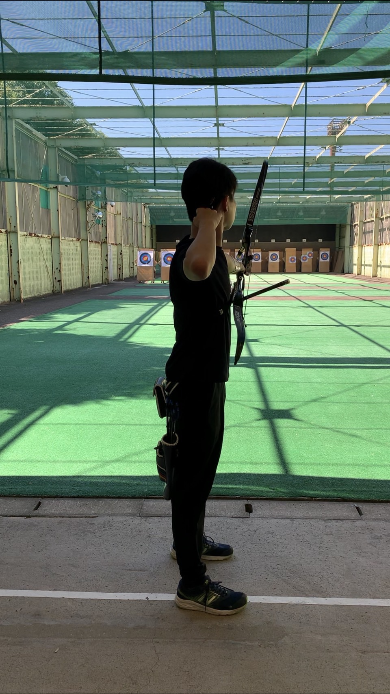
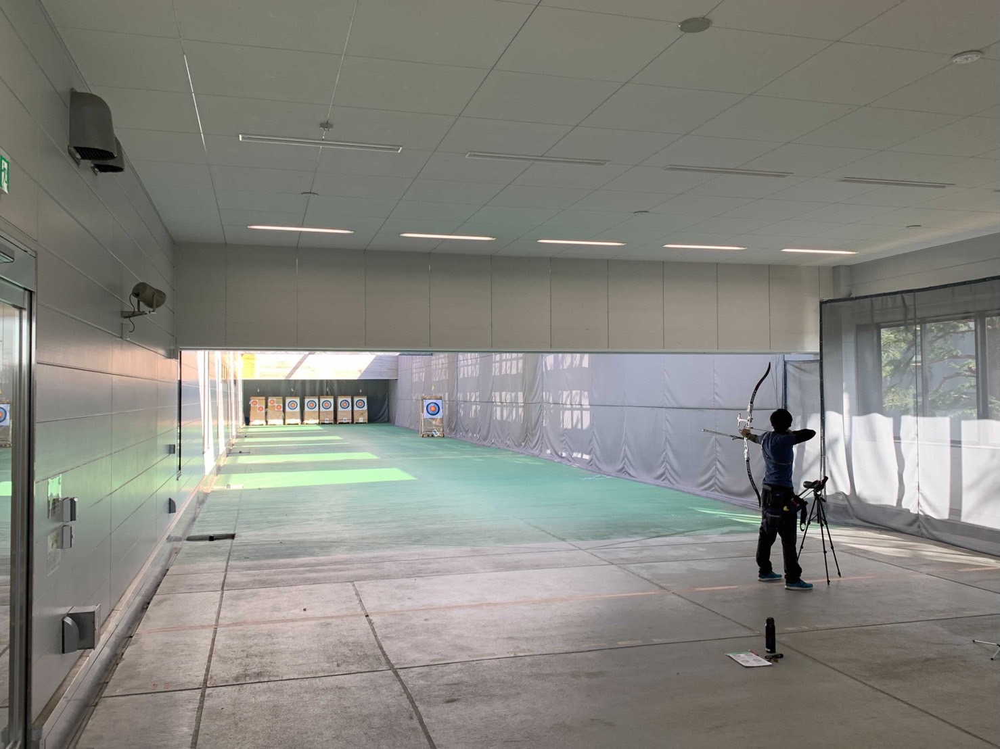
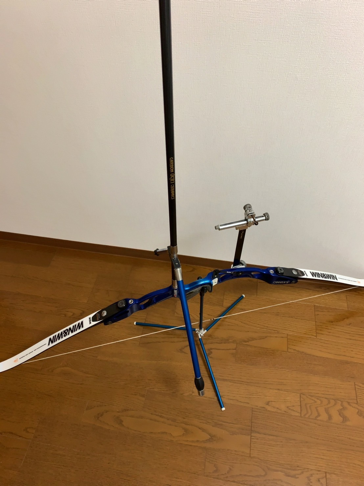
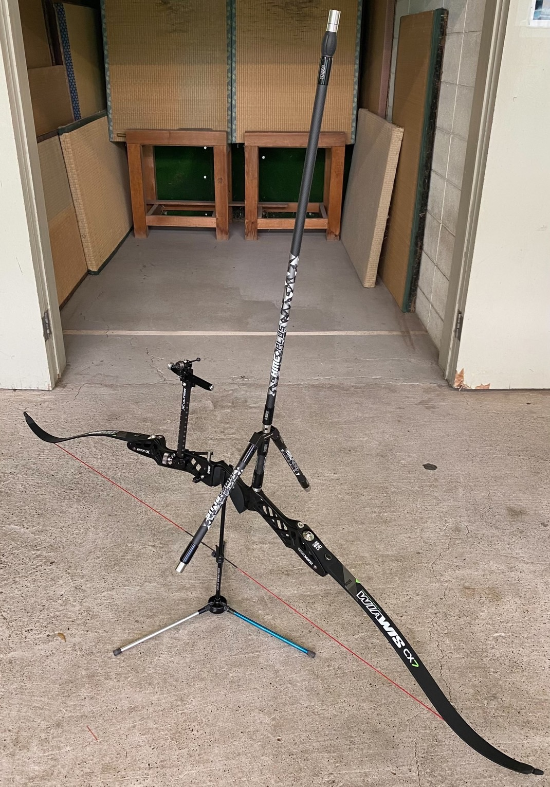
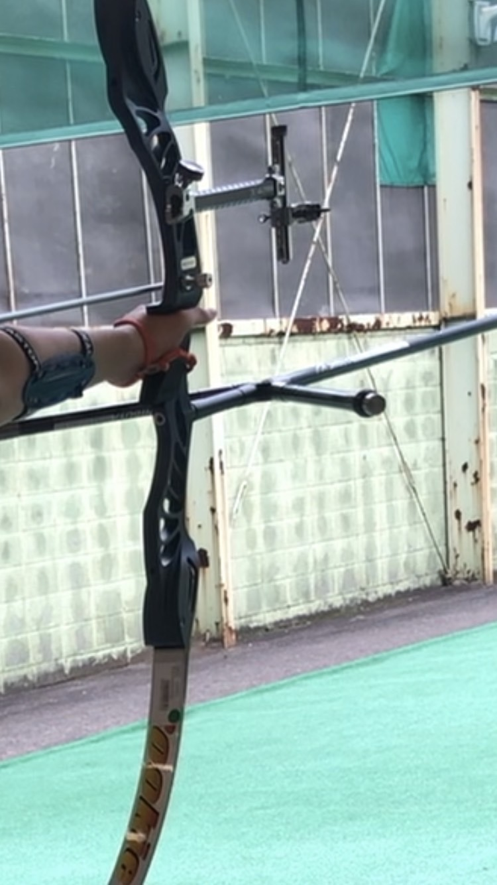
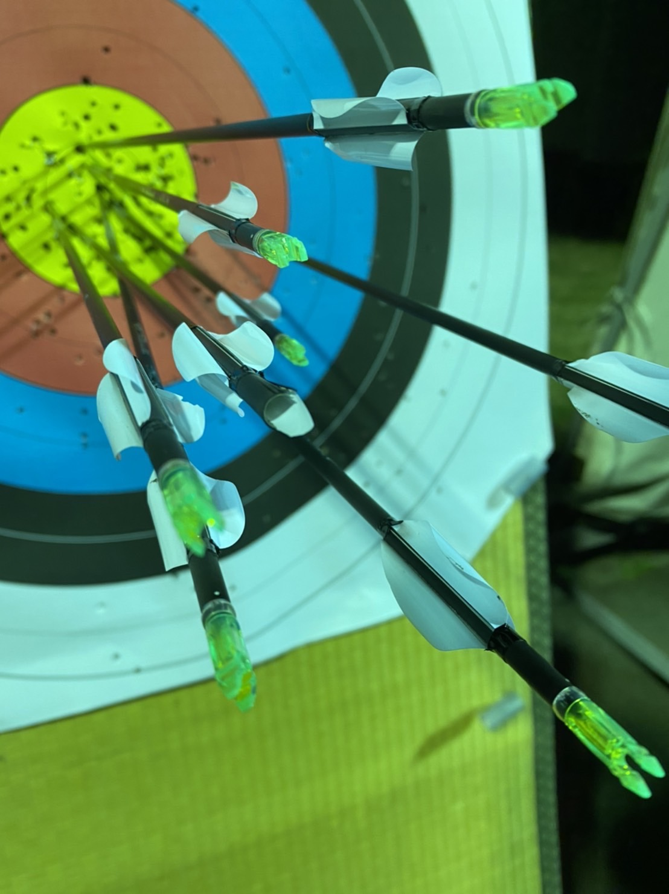
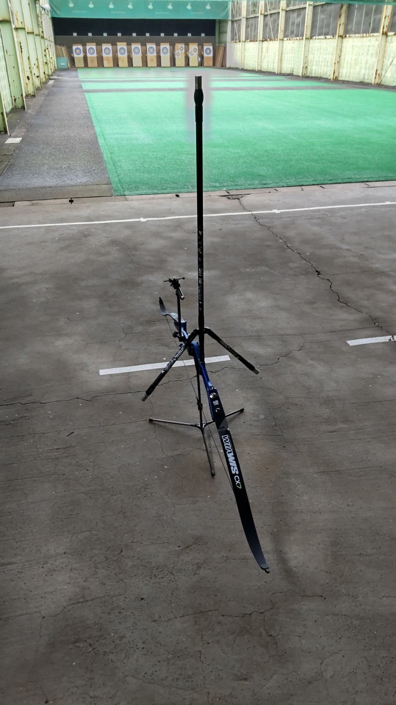

50期(2020年入部)

財務補佐
按田 智大
工学部 電気電子工学科
出身：富山県
趣味：漫画
アーチェリーの魅力を一言で！：アーチェリーは未経験者でも始めやすいです

駒責
宇田 裕哉
所属：文科一類
出身：静岡県・浜松北高校
趣味：YouTube鑑賞、自炊
アーチェリーの魅力を一言で！：自分と真正面からぶつかれるところ

柴田 祐大
工学部
出身：兵庫県
趣味：YouTube鑑賞
アーチェリーの魅力を一言で！：当たると気持ちいい

新歓
白石 優希
教養学部
出身：東京都
趣味：韓国ドラマ
アーチェリーの魅力を一言で！：楽しい

関口 颯樹
工学部 化学生命工学科
出身：埼玉県
趣味：ゲーム、グルメ、音楽
アーチェリーの魅力を一言で！：運動音痴にやさしい

竹井 健真
工学部 化学システム工学科
出身：埼玉県
趣味：ゲーム
アーチェリーの魅力を一言で！：弓具が格好いいところです

技術
竹内 誠一
農学部 国際開発農学専修
出身：静岡県
趣味：なし
アーチェリーの魅力を一言で！：なるようになるところ

中村 勇紀
工学部 航空宇宙工学科
出身：神奈川県
趣味：読書
アーチェリーの魅力を一言で！：的に当たるの楽しい！

web責
吉澤 亮
工学部 機械工学科
出身：神奈川県
趣味：将棋のコンピューターにボコボコにされること、ゆっくり解説動画観賞
アーチェリーの魅力を一言で！：当たれば楽しい